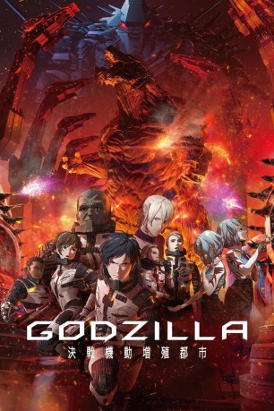

IMDB-Wertung: 5.8 / 10
IMDB-Wertung: 5.8 / 10  Metascore:
Metascore: 
Haruo und seine Kumpanen nehmen auf der Erde Kontakt mit dem eingeborenen Houtua-Stamm auf. Um Godzilla zu besiegen, suchen sie die alte Mechagodzilla-Anlage.
 IMDB-Wertung: 5.8 / 10 Metascore:
Haruo und seine Kumpanen nehmen auf der Erde Kontakt mit dem eingeborenen Houtua-Stamm auf. Um Godzilla zu besiegen, suchen sie die alte Mechagodzilla-Anlage.
Jahr: 2018
Dauer: 100 Minuten
FSK:
Land: Japan Studio: Toho CinemasTonspuren:
Untertitel: Deutsch, Englisch, , Französisch, , , ,
Auflösung: 1080p (1920x1080) Größe: 5038 MB
Genre: Action, Sci-Fi, Animation/Trick
Regisseur: Hiroyuki Seshita, Kôbun Shizuno
Drehbuch: Ishirô Honda
Soundtrack: Takayuki Hattori
Darsteller:
 Lucien Dodge als Metphies
Lucien Dodge als Metphies Frank Gerrish als Controller
Frank Gerrish als Controller Yûki Kaji als Adam Bindewald
Yûki Kaji als Adam Bindewald Mamoru Miyano als Haruo Sakaki
Mamoru Miyano als Haruo Sakaki Takahiro Sakurai als Metphies
Takahiro Sakurai als Metphies Tomokazu Sugita als Martin Lazzari
Tomokazu Sugita als Martin LazzariDatei: X:\HD-Anime-Collections\Godzilla\Godzilla Eine Stadt am Rande der Schlacht (2018, FSK, 1920x1080).mkv seit 15.08.2018
Festplatte: Gemischt-01+Anime
 Alle Filme aus Gruppe 'HD-Anime-Collections\Godzilla'
Alle Filme aus Gruppe 'HD-Anime-Collections\Godzilla'